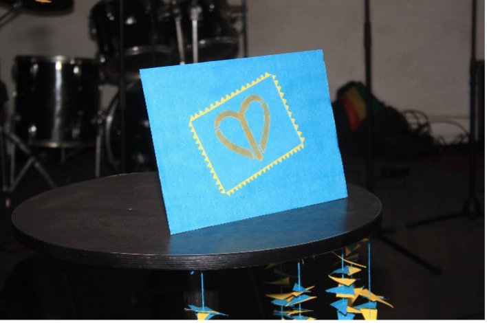
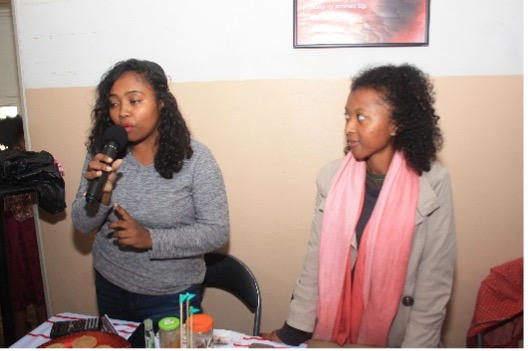
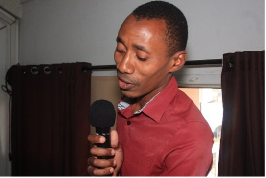

Journées Des Ecoles au Lycée de SABOTSY ANJIRO
La journée des écoles est une journée fixée par le ministère de l’éducation nationale où les écoles privée et public organisent des activités extrascolaires, pour divertir et responsabiliser leurs élèves.

Le Lycée de Sabotsy Anjiro l’a célébrée toute la journée le vendredi 10 Mars 2023 avec une série d’activités telle que des danses, des chants et des repas d’ensemble. Durant cette occasion, IAYI via la présidente a été invité à présenter un discours d’encouragement aux élèves de développer leur talent. Puisque les élèves du lycée de Sabotsy Anjiro regorgent de talents notamment dans les sports collectifs où ils ont remporté le denier championnat basketball inter école.

I Am Young and Impacting Célèbre le 8 Mars 2023 avec les femmes de Saboty Anjiro
A l’occasion de la célébration de la journée internationale des droits de la femme, IAYI a participé aux activités organisées par la commune de Saboty Anjiro, district de Moramanga pour célébrer, cultiver un esprit de solidarité et d’unité entre les femmes. Ces activités ont commencé le mois de février avec des concours de danse le 19 et 26.

Le 7 mars, il y a eu un nettoyage des alentours du CSBII (centre de santé de base niveau 2) réalisé par les femmes de différents bords allant du domaine politique, médical, policier,...
Le 8 mars, il y eu un carnaval dans la matinée qui a fait le tour de la commune en passant dans plusieurs quartiers accompagné des danses et des chants. Ce carnaval a été gracié par la présence du Maire et son Adjoint pour accompagner et encourager les femmes.
Dans la soirée, une soirée gala a été organisée dans la salle de la commune à l’honneur des femmes avec des activités de détente composés de chants, danses, élection de Miss Maman Anjiro, moments de sensibilisation sur les violences faites aux femmes, intervention et encouragement des mamans fait par la présidente d’IAYI à :
- Investir dans les projets de leurs enfants
- Accompagner leurs enfants dans leurs différents projets
- Et surtout le rôle qu’elles ont à jouer non seulement dans le développement de leurs enfants mais également de leur communauté.
Ce qui répond à notre mission d’Interpeler la population sur l’importance de l’écoute de la voix de la jeunesse.